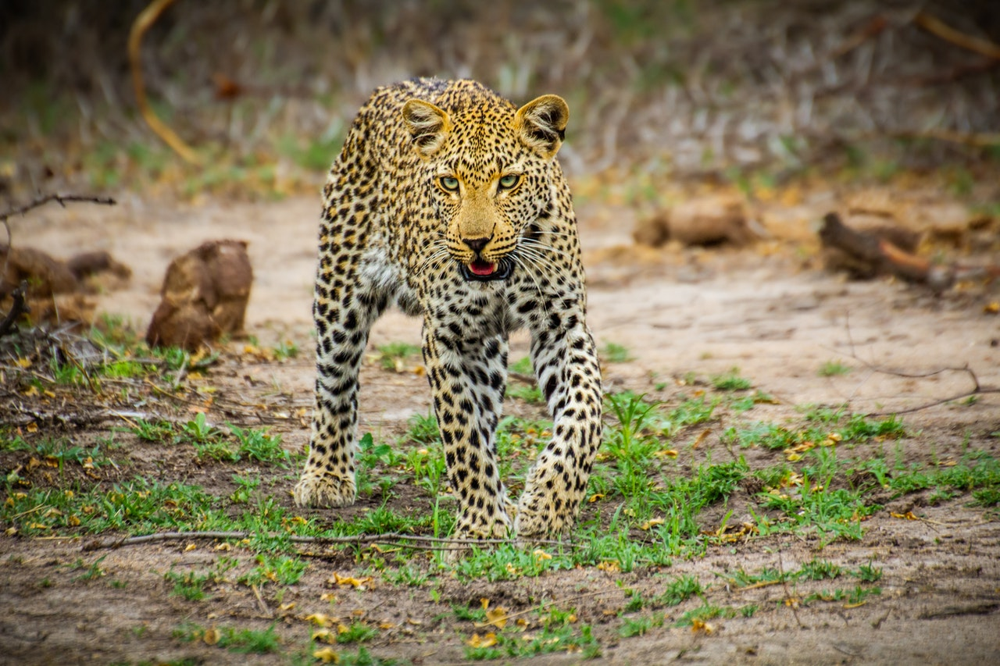

1. Most leopards are light coloured and have dark spots on their fur.
These spots are called “rosettes” because their shape is similar to that
of a rose.
There are also black leopards, too, whose spots are hard to see because
their fur is so dark.
2. Leopards are fast felines and can run at up to 58km/h!
They’re super springy, too, and can leap 6m forward through the air –
that’s the length of three adults lying head to toe!
3. Leopards are very solitary and spend most of their time alone.
They each have their own territory, and leave scratches on trees,
urine scent marks and poop to warn other leopards to stay away!br Males
and females will cross territories, but only to mate.

4. Leopards are skilled climbers, and like to rest in the branches of
trees during the day.
They are strong beasts, too, and can carry their heavy prey up into the
trees so that pesky scavengers, such as hyenas, don’t steal their meal!
5. Leopards communicate with each other through distinctive calls.
For instance, when a male wants to make another leopard aware of his
presence, he’ll make a hoarse, raspy cough.
They also growl when angry and, like domestic cats, purr when happy and
relaxed.
LION
1. NEARLY ALL WILD LIONS LIVE IN AFRICA, BUT ONE SMALL POPULATION
EXISTS ELSEWHERE…
Nearly all wild lions live in Africa, below the Sahara Desert, but one
small population exists around Gir Forest National Park in western
India.
Lions in west and central Africa are more closely related to these
Asiatic lions in India, than to those found in southern and east Africa.
2. THEY CAN WEIGH 30 STONE
On average, males weigh 190kg (almost 30 stone) and females weigh 126kg
(almost 20 stone).
They need this weight and power behind them to hunt large prey and
defend their pride.
3. MALES’ MAGNIFICENT MANES TELL A STORY
Male lions grow impressive manes the older they get. These manes grow up
to 16cm long and are a sign of dominance. The older they get, the darker
their manes go.
As well as attracting females, their manes may also protect their neck
and head from injuries during fights.
4. LIONS ARE BIG EATERS
Lions can eat up to 40kg of meat in a single meal - around a quarter of
their body weight.
Their tongues have sharp-pointed rasps, called papillae, which are used
to scrape meat off the bones.
5. THERE AREN’T AS MANY LIONS AS YOU’D THINK
Only 20,000 wild lions remain in Africa, which is half of what it was
only 30 years ago. Some scientists predict that wild lions could face
extinction by the year 2050 if trends continue and humans don't increase
their efforts to protect these amazing and powerful animals. The main
threats to lions are loss of territory, lion/human conflict, and trophy
hunting. As a traveler, you can do your part by traveling to national
parks and game reserves that put resources toward protecting Africa's
lions.
ELEPHANT
1) THE ELAPHANTS SENSE OF SMELL
Elephants tend to hear or smell things first and then train their sight,
instead of using vision as their primary sensory input. They keep track
of their family members and non-family members using just their sense of
smell.
2. CALVES CAN STAND WITHIN 20 MINUTES OF BIRTH.
Amazingly, elephant calves are able to stand within 20 minutes of being
born and can walk within 1 hour. After two days, they can keep up with
the herd.
3. THEY’RE THE WORLD’S LARGEST LAND ANIMAL
The African elephant is the world's largest land mammal – with males on
average measuring up to 3m high and weighing up to 6 tonnes.
Males only reach their full size at 35-40 years - that’s well over half
their lifespan as wild elephants can live for up to 60-70 years.
4. AN ELEPHANT NEVER FORGETS
The elephant's temporal lobe (the area of the brain associated with
memory) is larger and denser than that of people - hence the saying
'elephants never forget'.
5. THEIR TRUNKS HAVE MAD SKILLS
Elephants have around 150,000 muscle units in their trunk. Their trunks
are perhaps the most sensitive organ found in any mammal - Asian
elephants have been seen to pick up a peanut, shell it, blow the shell
out and eat the nut.
Elephants use their trunks to suck up water to drink – it can contain up
to 8 litres of water. They also use their trunks as a snorkel when
swimming.
BUFFALO
1. HABITAT
In general, buffaloes favor grassland, whether it be open, wooded or
bushed.
They feed and travel most often during the early morning, evening and
nighttime.
Buffalos spend the rest of their time lying in shade, similar to cows in
a field, although they likely sleep for only about an hour per day.
They are never farther than nine miles from a water source, since they
must drink every day.
2) Buffalo Herd Life Offers Safety in Numbers
Living as a herd offers many benefits, like sharing the best grazing
areas and water holes, but it also offers safety in numbers. The lion is
the natural predator of the buffalo. When the herd is under attack they
will form a circle around the young, old or weak members and use their
large, sharp and deadly horns to protect them and fight off the
predator. This is usually very effective.
3) African buffalo's speed
Although not the fastest bovine at 35mph (56kph), African Buffalo can
still outrun lions. However, predators can accelerate quicker making the
buffalo easy to ambush.
4. BREEDING
Males test for females in heat by sniffing their urine and genitals;
fortunately, competition for their attention does not entail much fierce
fighting.
Posturing and mock battles serve as substitutes for conflict, which
helps to keep these large, powerful animals from injuring one another.
Courtship entails a temporary male-female bond, which ends shortly after
mating.
5. FEEDING HABITS
Buffaloes are strictly grazers. Different species of grass and even
their parts—leaves, stems and inflorescence—are selected on a basis of
smell, taste and protein content.
The amount of protein within vegetation is related to its tenderness, so
grazers can weed out the nutritious from the coarse by the amount of
effort needed to pull the plant apart. Seasonal changes in grass
availability and nutritional value dictate the local movements of
buffalo in semi-arid areas.
During the rainy season, they will feed on open plains; in the dry
season, they retreat to woodlands, hill slopes and river fringes.
RHINO
1. THERE ARE 5 SPECIES OF RHINO...
Two African – black and white rhinos – and three Asian – greater
one-horned, Sumatran and Javan rhinos.
Three of these (black, Sumatran and Javan) are listed as ‘critically
endangered’ by IUCN – there are thought to be fewer than 70 Javan and
100 Sumatran rhinos left in the wild,
meaning their populations are truly under threat of extinction.
2. RHINOS ARE HUGE
Sumatran rhinos are the smallest, but they can still weigh 600kg (that’s
almost 95 stone).
And white rhinos are the largest, weighing up to 3,500kg (over 550
stone, or well over 3 tonnes!).
This is mighty impressive considering they mainly eat grass and leaves.
3.THEIR HORN IS MADE FROM THE SAME STUFF AS OUR FINGERNAILS
Rhino horn is made up of keratin - the same protein which forms the
basis of our hair and nails.
Javan and greater one-horned rhinos only have one horn, whereas all the
other rhino species have two horns.
Their horns grow continuously during their lifetime – the white rhino's
horn can grow 7cm every year – and the record length is 150cm long!
4. RHINOS HAVE POOR VISION
Rhinos’ eyesight isn’t great – they’re unable to see a motionless person
at a distance of 30m – they mainly rely on their strong sense of smell.
5. RHINOS ARE UNDER THREAT
Over 7,100 African rhinos have been killed by poaching in the last 10
years – that’s around 2 every day.
Poaching gangs are becoming increasingly sophisticated. In some cases,
using helicopters to track the rhinos, and once the animals are shot
with guns or tranquilising darts, their horns are removed using
chainsaws, and quickly airlifted away.
The whole operation can take as little as 10 minutes, and if the rhino
isn't already dead, it will often bleed to death.
Ground rhino horn is used in traditional Asian medicine to ‘cure’ a
range of ailments, from cancer to hangovers. And the horn is seen as a
status symbol, particularly in Vietnam.
Habitat loss and fragmentation are an increasing threat to rhinos, as
human populations and infrastructure grows, encroaching on rhino
habitat.